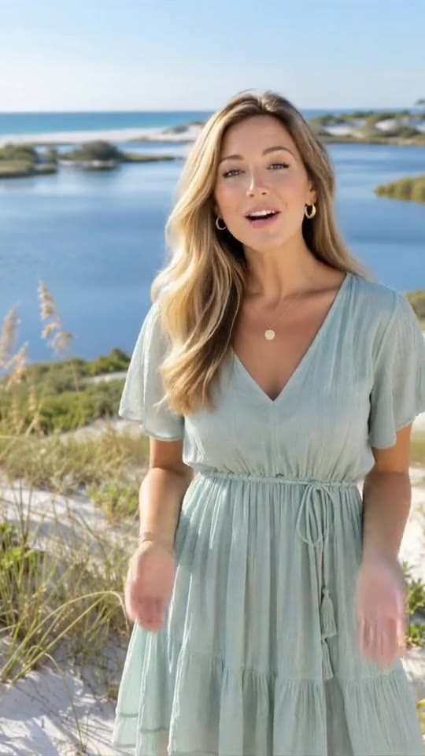
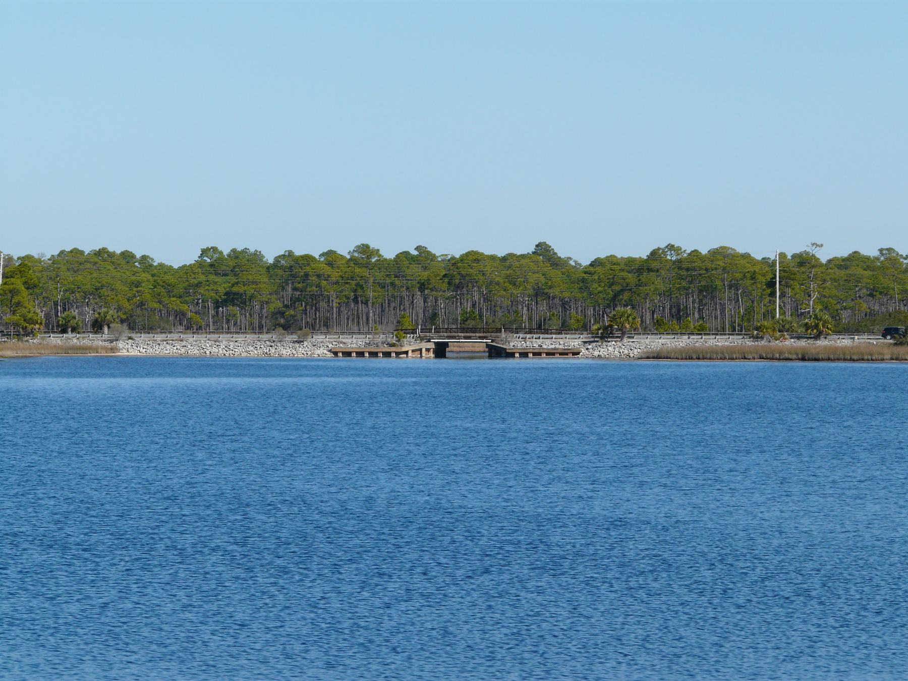

The chain
15 Lakes
Named lakes, west to east, from Fuller to Powell.


Walton County, Florida
Fifteen rare and imperiled lakes along roughly 26 miles of Gulf coast. Separated from the Gulf by sand, they periodically reconnect through natural outfalls, transforming freshwater lakes into dynamic, brackish ecosystems.

Walton County’s coastal dune lakes sit just behind the Gulf’s dunes. Unlike ordinary freshwater lakes, they periodically connect with the Gulf through naturally opening and closing outfalls. That exchange helps shape the lakes’ water, wildlife, and surrounding communities.
The chain
15 Lakes
Named lakes, west to east, from Fuller to Powell.
The coast
About 26 miles
Of coastline home to Walton County’s coastal dune lakes.
Unique
Globally Rare
Found in only a handful of places worldwide.
The Water
Fresh + Brackish
Their waters change as natural outfalls open and close.
Explore
Click on the lake for more details.
Choose a lake or its name. West is left and east is right.
The chain continues east of Western Lake: Eastern Lake, Deer Lake, Camp Creek Lake, and Lake Powell. Scroll sideways to reach them.
Satellite imagery: Esri, Maxar, Earthstar Geographics, and the GIS User Community.
 Fuller Lake
Fuller LakeThe western beginning of Walton's dune lake chain.
 Morris Lake
Morris LakeA quiet lake surrounded by ancient dunes and protected land.
 Campbell Lake
Campbell LakeOne of Walton County's most intact coastal dune lake systems.
 Stallworth Lake
Stallworth LakeA small, secluded lake tucked behind the dunes.
 Allen Lake
Allen LakeA coastal dune lake woven directly into the 30A landscape.
 Oyster Lake
Oyster LakeA distinctive lake with one of the coast's most recognizable shapes.
 Draper Lake
Draper LakeWhere roads, development, and natural drainage come together.
 Big Redfish Lake
Big Redfish LakeA central 30A lake shaped by both community and conservation.
 Little Redfish Lake
Little Redfish LakeA small lake with an important place in the larger dune lake system.
 Alligator Lake
Alligator LakeA compact dune lake at the western edge of Grayton's protected landscape.
 Western Lake
Western LakeOne of Walton County's largest, best-known, and most visible dune lakes.
 Eastern Lake
Eastern LakeA dynamic lake where neighborhood, outfall, and Gulf meet.
 Deer Lake
Deer LakeA protected dune lake surrounded by one of 30A's most natural landscapes.
 Camp Creek Lake
Camp Creek LakeA long coastal lake bridging protected lands and east 30A communities.
 Lake Powell
Lake PowellThe largest of Walton County's coastal dune lakes.
Coastal dune lakes are shallow freshwater-to-brackish lakes that form behind coastal dunes. Unlike ordinary inland lakes, many periodically connect with the Gulf through natural outfalls.
Walton County has 15 named coastal dune lakes concentrated along roughly 26 miles of Gulf coastline. Rather than appearing as isolated lakes, they form an unusually dense group along one stretch of coast.
Comparable coastal dune lake systems are found in only a limited number of regions around the world, including parts of Australia, New Zealand, Madagascar, the Pacific Northwest, and Florida’s Panhandle.
The color often comes from naturally occurring organic material carried into the lakes from surrounding vegetation, wetlands, groundwater, and runoff. Dark or tea-colored water does not necessarily mean the water is polluted.
An outfall is the natural channel that periodically connects a coastal dune lake with the Gulf. Most of the time, beach sand forms a berm between the lake and the Gulf.
Rainfall, groundwater, and runoff can gradually raise the lake level behind the beach berm. When the lake becomes high enough, or when waves and storms reshape the beach, the outfall can open across the sand.
Lake water flows toward the Gulf, and under some conditions Gulf water can also move back into the lake. That exchange can quickly increase salinity and allow marine organisms to move through the channel.
Waves, currents, and shifting sand gradually rebuild the beach berm. Once the channel closes, rainfall, groundwater, and runoff begin freshening the lake again.
They can be both, depending on conditions. Their salinity may range from mostly fresh to significantly brackish. That changing chemistry is one of the defining characteristics of the system.
Not in the same way as a bay or estuary that remains continuously connected to the Gulf. Their connection with the Gulf is intermittent, opening and closing as conditions change.
No. Fuller Lake, for example, does not have its own direct Gulf outfall and is hydrologically connected with neighboring Morris Lake. Allen Lake’s drainage toward the Gulf passes beneath County Road 30A. Each lake has its own shape, access, and outfall characteristics. They also differ in size, watershed, vegetation, water chemistry, and Gulf influence. Some are predominantly freshwater, while others have greater marine influence.
A watershed is the surrounding land area that drains toward a lake. Walton County’s 2018 Coastal Dune Lake Study mapped drainage boundaries for the coastal dune lakes because conditions throughout the watershed can affect water reaching the lake.
Walton County’s 2018 Coastal Dune Lake Study found that lakes with more naturally vegetated shoreline generally had better long-term water quality. The study specifically emphasized minimizing disturbance of natural vegetation within roughly 60 feet of the water line.
Rainfall and runoff can carry nutrients and other material from the surrounding watershed toward a lake. Walton County’s 2018 study identified stormwater management and vegetated buffers as important parts of protecting biological health.
Researchers found that aquatic vegetation is a useful indicator of dune lake health because plant communities reflect environmental conditions over time. Stormwater inputs, shoreline alterations, bottom conditions, surrounding land use, phosphorus, and vegetated buffers were also identified as important factors.
Monitoring has included nitrogen, phosphorus, chlorophyll-a, conductivity or salinity, aquatic vegetation, shoreline conditions, and watershed characteristics. The 2018 county study used water-quality records, field vegetation assessments, and watershed modeling together rather than relying on a single measurement.
Lake Powell is the largest of Walton County’s coastal dune lakes. Choctawhatchee Basin Alliance measurements place it at roughly 710 acres, while some other published descriptions use a figure closer to 800 acres.
Coastal dune lakes do not have permanently fixed shorelines. Water levels change, and different studies may use different mapping methods or shoreline boundaries, so acreage estimates can vary.
They support a distinctive mix of freshwater, brackish-water, wetland, dune, and coastal habitats while also storing and moving water through the coastal landscape.
Yes, but access varies by lake. Public access includes state parks, county parks, boat ramps, kayaking and fishing access, and the Timpoochee Trail. Western Lake, Eastern Lake, Deer Lake, Camp Creek Lake, Morris Lake, Campbell Lake, and Lake Powell are among the lakes with identified public-access opportunities.
Several lakes have identified public opportunities for kayaking and fishing, including Western Lake, Eastern Lake, Deer Lake, Camp Creek Lake, and Lake Powell. Access rules and facilities vary by location.
Explore the individual lake pages for maps, public access, outfalls, water quality, history, and research specific to each lake.